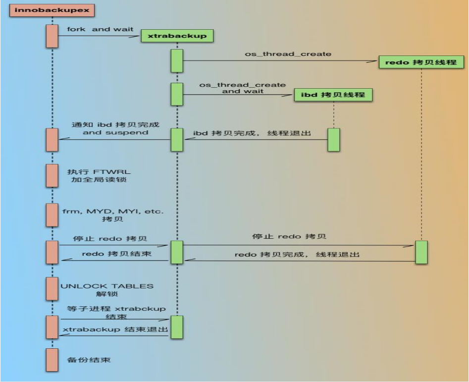

xtrabackup简介 xtrabackup是percona提供的MySQL数据库的备份工具，是唯一开源的能对innodb和xtradb数据库进行热备的工具
xtrabackup的特点
备份还原过程快、可靠
备份过程不会打断正在执行的事务
能够基于压缩等功能介于磁盘空间和流量
自动实现备份检验
开源免费
xtrabackup备份过程 
xtrabackup安装 xtrabackup在centos的EPEL源中，可以在配置完EPEL源后使用yum安装
也可以去官网下载最新版本的xtrabackup
https://www.percona.com/downloads/XtraBackup/LATEST
xtrabackup使用 1 xtrabackup [option] BACKUP-ROOT-DIR
选项
说明
–user
备份时连接到MySQL的账号
–password
备份时连接到MySQL所使用的账号的密码
–host
备份数据库的地址
–databases
所要备份的数据库名，如果有多个数据库可以使用”,”隔开，如果备份表则使用”DATABASE.TABLE”来指明
–incremental
表示创建一个增量备份
–incremental-basedir
指定前一次完全备份或者增量备份的目录
–incremental-dir
指定还原时增量备份的目录
–apply-log
备份完成后的数据不能直接用于恢复操作，因为备份的数据中可能包含尚未提交的事务或已经提交但尚未同步的至数据库中过的事务，此时数据仍处于不一致状态，此选项作用是通过回滚提交的事务及同步已经提交的事务至数据文件使数据文件处于一致性状态
–apply-log-only
恢复时阻止回滚未完成的事务，在有增量备份时使用
–export
开启可导出单独的表之后再导入其他MySQL中
–redo-only
合并增量备份时使用，不包括最后一个增量备份的合并
–copy-back
做数据恢复时将备份数据文件拷贝到MySQL服务器的datadir
–move-back
作用和copy-back想用区别在于此选项是用来移动备份的数据
完全备份及还原 在完全备份之前需要创建一个备份的目录作为存放备份使用
数据库内存放的数据
1 2 3 4 5 6 7 8 9 10 [root@localhost ~] +--------------------+ | Database | +--------------------+ | hellodb | | information_schema | | mysql | | performance_schema | | test | +--------------------+
完全备份 对数据库破坏 恢复 3.1在恢复数据库前需要先将数据库内数据清理，然后停止mysql服务
1 2 3 [root@localhost ~] [root@localhost ~] Stopping mysqld (via systemctl): [ OK ]
3.2对备份目录做整理
3.3将整理好的备份数据还原至数据库
3.4此时还原回去的数据属性还有问题，需要将其修改
1 2 3 4 5 6 7 8 9 10 11 12 13 [root@localhost ~] total 12320 -rw-r----- 1 root root 16384 May 6 21:28 aria_log.00000001 -rw-r----- 1 root root 52 May 6 21:28 aria_log_control drwx------ 2 root root 272 May 6 21:28 hellodb -rw-r----- 1 root root 942 May 6 21:28 ib_buffer_pool -rw-r----- 1 root root 12582912 May 6 21:28 ibdata1 drwx------ 2 root root 4096 May 6 21:28 mysql drwx------ 2 root root 20 May 6 21:28 performance_schema drwx------ 2 root root 20 May 6 21:28 test -rw-r----- 1 root root 527 May 6 21:28 xtrabackup_info [root@localhost ~]
启动服务测试 1 2 3 4 5 6 7 8 9 10 11 12 13 14 15 16 17 18 19 20 21 22 23 [root@localhost ~] Starting mysqld (via systemctl): [ OK ] [root@localhost ~] +--------------------+ | Database | +--------------------+ | hellodb | | information_schema | | mysql | | performance_schema | | test | +--------------------+ +-------------------+ | Tables_in_hellodb | +-------------------+ | classes | | coc | | courses | | scores | | students | | teachers | | toc | +-------------------+
完全备份+增量备份及还原 在备份之前先创建出完全备份的目录以及增量备份的目录
1 2 3 4 5 [root@localhost ~] mkdir: created directory ‘/data/backup’ mkdir: created directory ‘/data/backup/full’ mkdir: created directory ‘/data/backup/inc1’ mkdir: created directory ‘/data/backup/inc2’
数据库内所存放的数据
1 2 3 4 5 6 7 8 9 10 [root@localhost ~] +--------------------+ | Database | +--------------------+ | hellodb | | information_schema | | mysql | | performance_schema | | test | +--------------------+
对数据进行完全备份 此时数据库内数据发生变化 1 2 3 4 5 6 7 [root@localhost ~] [root@localhost ~] +-----+-------------+-----+--------+ | TID | Name | Age | Gender | +-----+-------------+-----+--------+ | 5 | Li Xiaolong | 30 | M | +-----+-------------+-----+--------+
对数据库进行增量备份 数据库内数据再次发生变化 1 2 3 4 5 6 7 [root@localhost ~] [root@localhost ~] +-------+------------+-----+--------+---------+-----------+ | StuID | Name | Age | Gender | ClassID | TeacherID | +-------+------------+-----+--------+---------+-----------+ | 26 | Sun Wukong | 35 | F | NULL | NULL | +-------+------------+-----+--------+---------+-----------+
再次对数据库做增量备份 破坏数据库 恢复数据库 7.1先对数据库做清理，并停止数据库服务
1 2 3 [root@localhost ~] [root@localhost ~] Stopping mysqld (via systemctl): [ OK ]
7.2对完全备份做预整理
因为后续还有增量备份，所以此处需要使用apply-log-only选项来阻止事务的回滚。
7.3合并第一次的增量备份
此为第一个增量备份后续还有第二个增量所以需要使用apply-log-only阻止回滚事务
7.3合并第二次的增量备份
此为最后个增量备份无需再使用apply-log-only阻止回滚事务
7.4整理完毕将备份复制回数据库
7.5将数据库内的属主和属组进行更改
重启服务测试 1 2 3 4 5 6 7 8 9 10 11 12 13 14 15 16 17 18 19 [root@localhost backup] Starting mysqld (via systemctl): [ OK ] [root@localhost backup] MariaDB [hellodb]> select *from students where stuid>25; +-------+------------+-----+--------+---------+-----------+ | StuID | Name | Age | Gender | ClassID | TeacherID | +-------+------------+-----+--------+---------+-----------+ | 26 | Sun Wukong | 35 | F | NULL | NULL | +-------+------------+-----+--------+---------+-----------+ 1 row in set (0.00 sec) MariaDB [hellodb]> select *from teachers where tid>4; +-----+-------------+-----+--------+ | TID | Name | Age | Gender | +-----+-------------+-----+--------+ | 5 | Li Xiaolong | 30 | M | +-----+-------------+-----+--------+ 1 row in set (0.00 sec)
其他的注意事项
在数据恢复之前必须先要停止MySQL服务
在还原时MySQL的数据库目录必须为空，否则不会覆盖
数据库内容还原后，其属主和属组为root需要手动将其全部改为mysql